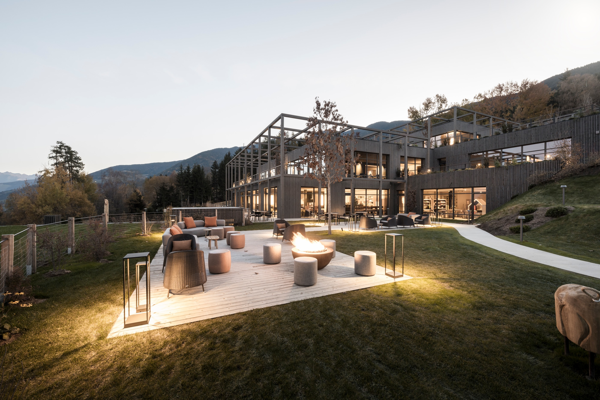
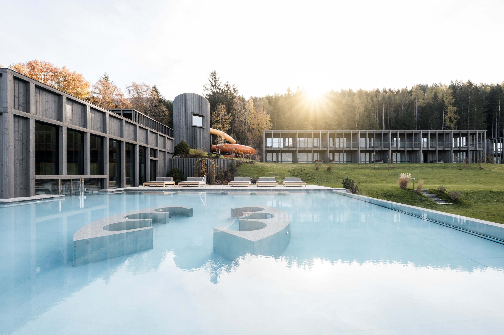
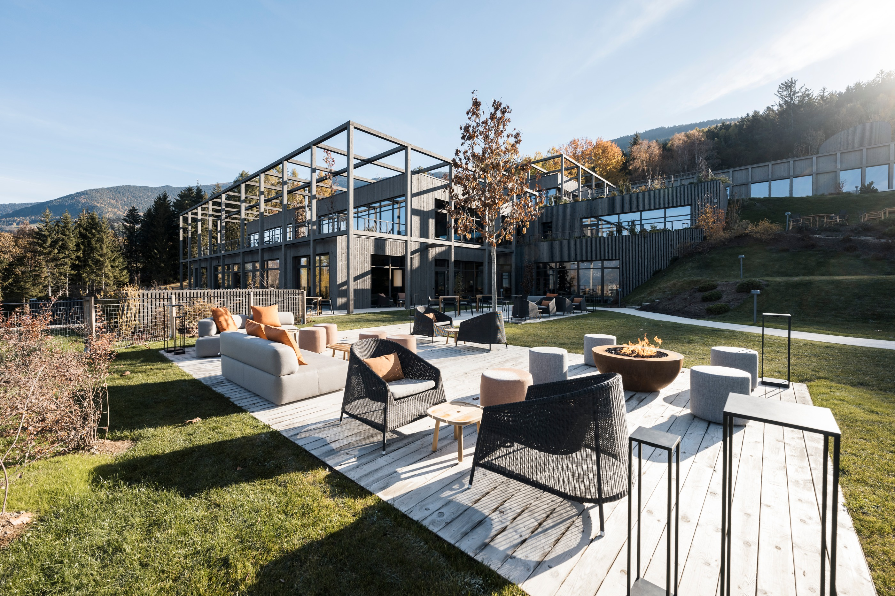

093
093d'Kammer
🇩🇪 Duitsland · Kronburg/Illerbeuren, Allgäu
boetiek-B&B / gerenoveerde boerderij met appartementenprijs op aanvraag




🇮🇹 Italië · Sant'Andrea, Plose, boven Brixen, Zuid-Tirol
Dit gloednieuwe resort (geopend november 2024) op 1.067 meter hoogte op de Plose combineert natuurlijke architectuur van sparrenhout en natuursteen met 70 elegante suites. AKI Water World biedt een glijbaan met tijdmeting, tube- en golfglijbanen en een babybad van 34°C. Met 12 uur professionele kinderopvang per dag en een adults-only spa met bossauna's is het zowel voor kinderen als ouders zeer verzorgd. Duurzaamheid staat centraal met groene daken en zonnepanelen.
093🇩🇪 Duitsland · Kronburg/Illerbeuren, Allgäu
 095
095🇮🇹 Italië · Natz-Schabs (Naz-Sciaves), Zuid-Tirol
 096
096🇮🇹 Italië · Chienes/Casteldarne bij Bruneck, Zuid-Tirol
🇮🇹 Italië · Meranza/Maranza (Mühlbach), Zuid-Tirol
Klik op het hartje bij een verblijf om het hier toe te voegen of te verwijderen. Favorieten worden bewaard in je browser op dit apparaat.